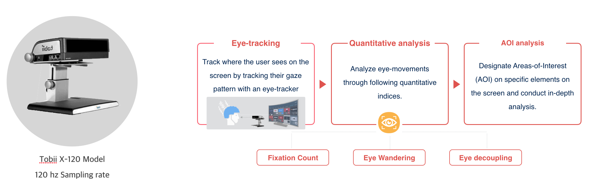
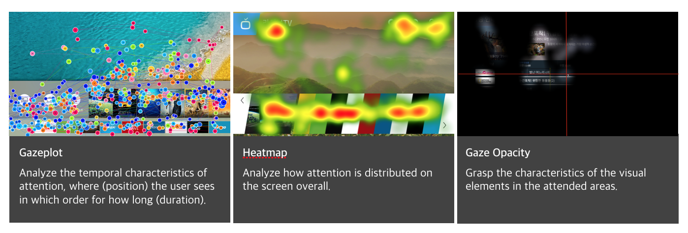
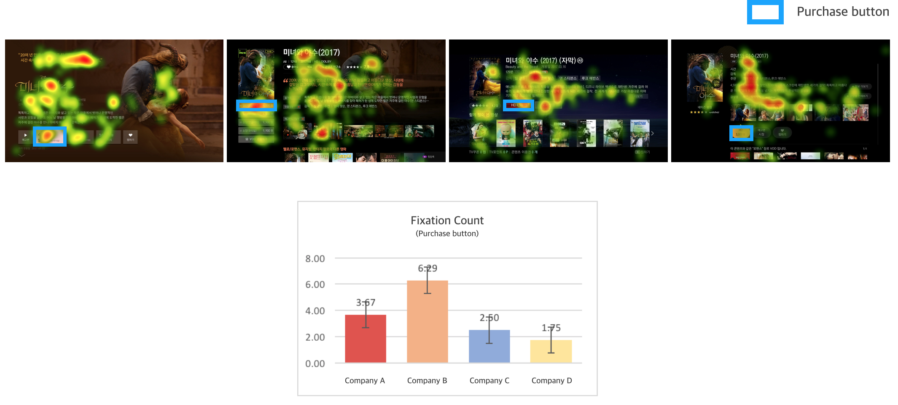
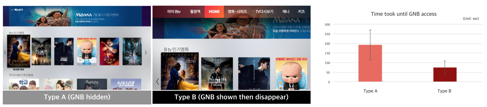

| Objective | Conduct usability testing of Btv UI 5.0 based on behavioral and eye-tracking data, analyze design characteristics/problems and propose improvement strategies. |
| Timeline | 2017.04 ~ 2017.8 (4.5 months) |
| Team & My Role |
|
Project in collaboration with SK Broadband
| Objective | Conduct usability testing of Btv UI 5.0 based on behavioral and eye-tracking data, analyze design characteristics/problems and propose improvement strategies. |
| Timeline | 2017.04 ~ 2017.8 (4.5 months) |
| Team & My Role |
|
We conducted usability test of SK Broadband's new UI 5.0 in comparison to other TV streaming apps. Evaluation was predominantly based on eye-tracking, but also collected well-rounded information through survey, in-depth interviews and behavioral observation of user tasks.
We evaluated how much the interface focuses or distracts viewer’s attention while browsing, whether it effectively guides attention to the target button, and how it is related to display layout (e.g., degree of crowding between icons). Evaluated design efficiency via how much of viewer’s attention is focused on the informative contents. Used eye-tracking. Can see which purchase button gets viewers attention fastest, the longest, and continuously. Salient item in the background (less valuable content) continuously distracts viewer’s attention in the course of browsing.
 This screen restricts viewer’s attention because the visual effect on the category highlight is too salient. We can see in the heatmap that attention is predominantly concentrated in the highlight of the navigation bar. Gazeplot shows that attention moves in a limited range following a relatively narrow path, getting continuously pulled back to the highlight. Overall, although the focus is straight forward, the design lacks to facilitate category understanding or attention to promotion banners.
By designating area-of-interest (AOI) and analyzing how fast, and how much viewers fixated (first fixation duration, fixation count), for how long (fixation duration) we evaluated whether the button design effectively facilitates content purchase.
Two different GNB designs were compared and we tested whether the visual cues were effective in directing the viewers to the GNB. When we compared the time it took for participants to access the GNB, navigation type B was located much faster than type A showing that type A is a better design than B. We used eye-tracking to access the effectiveness of the hovering ‘menu arrow’ visual cue in guiding users to the GNB. Result showed that participants who did not fixate on the ‘menu arrow’ still successfully located GNB nevertheless, suggesting that the visual cue had no much effect as a pointer to the GNB.
